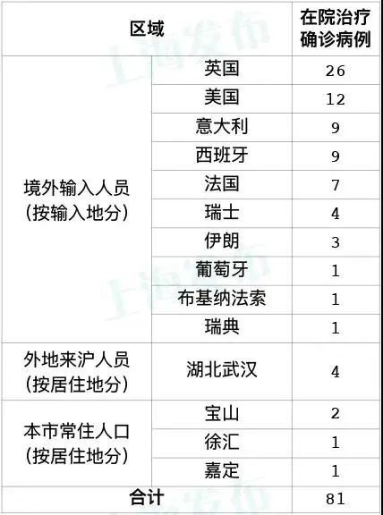

无症状感染者为何不纳入确诊病例？ 官方：无临床表现
原文链接 备份链接 本文来源：武汉发布 “ 如果无症状感染者在隔离期间出现了症状，则将其作为确诊病例报告并公布。 ” 3月23日，针对当前市民比较关注的新冠病毒无症状感染者相关问题，市卫生健康委组织召开省、市专家咨询会，就市民关注的问题答 …
上海发布微信公众号
上海市卫健委今早（24日）通报：3月23日0—24时，通过口岸联防联控机制，报告9例境外输入性新冠肺炎确诊病例。截至3月23日24时，累计报告境外输入性确诊病例75例，现有20例境外输入性疑似病例正在排查中。
病例1为中国上海籍，在英国留学，3月19日自英国伦敦出发，经泰国曼谷转机后于3月20日抵达上海浦东国际机场，入关后即被隔离观察，综合流行病学史、临床表现、实验室检测和影像学检查结果等，诊断为确诊病例。
病例2为中国上海籍，在美国留学，3月20日自美国纽约出发，于3月21日抵达上海浦东国际机场，入关后即被隔离观察，综合流行病学史、临床表现、实验室检测和影像学检查结果等，诊断为确诊病例。
病例3为中国上海籍，在英国留学，3月18日自英国伦敦出发，经新加坡樟宜转机后于3月19日抵达上海浦东国际机场，入关后即被隔离观察，综合流行病学史、临床症状、实验室检测和影像学检查结果等，诊断为确诊病例。
病例4为中国云南籍，在英国留学，3月20日自英国伦敦出发，于3月21日抵达上海浦东国际机场，因有症状，入关后即被送至指定医疗机构留观。综合流行病学史、临床症状、实验室检测和影像学检查结果等，诊断为确诊病例。
病例5为丹麦籍，3月18日自瑞典出发，经德国法兰克福转机后于3月19日抵达上海浦东国际机场，入关后即被隔离观察，综合流行病学史、临床表现、实验室检测和影像学检查结果等，诊断为确诊病例。
病例6、病例7、病例8为家人，均为英国籍，3月19日自英国伦敦出发，经泰国曼谷转机后于3月20日抵达上海浦东国际机场，入关后即被隔离观察，综合流行病学史、临床症状、实验室检测和影像学检查结果等，诊断为确诊病例。
病例9为英国籍，3月20日自英国伦敦出发，经泰国曼谷转机后于3月22日到达上海浦东国际机场，入关后即被隔离观察，综合流行病学史、临床表现、实验室检测和影像学检查结果等，诊断为确诊病例。
9例境外输入性确诊病例均已转至定点医疗机构救治，已追踪同航班的密切接触者26人，均已落实集中隔离观察。
3月23日0—24时，本地新增1例境外输入关联病例。截至3月23日24时，累计报告本地确诊病例339例，现有本地疑似病例0例。
该确诊病例常住上海宝山，为境外输入关联病例。3月14、15日，其在广东出差，曾与当地确诊的境外输入性病例有过接触。3月21日根据协查通报，本市将其作为密切接触者，对其实施集中隔离观察，期间出现症状。综合流行病学史、临床症状、实验室检测和影像学检查结果等，诊断为确诊病例。
确诊病例涉及区域和场所的情况如下：
宝山区：卓越时代广场、喜士多便利店（呼兰门市店）、每日鲜精品水果园（南蕴藻路店）
目前，已追踪到其在本市的密切接触者9人，均已落实集中隔离观察。对该病例曾活动过的场所已进行终末消毒。
3月23日0—24时，新增治愈出院1例，为意大利输入性病例。截至3月23日24时，累计治愈出院329例，死亡4例。现有81例在院治疗（含境外输入性73例），其中病情平稳72例，重症2例，危重型7例。

戳这里进入
“全国新型冠状病毒感染病例实时地图”↓↓
本期编辑 周玉华
推荐阅读


原文链接 备份链接 本文来源：武汉发布 “ 如果无症状感染者在隔离期间出现了症状，则将其作为确诊病例报告并公布。 ” 3月23日，针对当前市民比较关注的新冠病毒无症状感染者相关问题，市卫生健康委组织召开省、市专家咨询会，就市民关注的问题答 …
原文链接 备份链接 澎湃新闻记者 钟笑玫 郑朝渊 实习生 陈媛媛 刘昱秀 张颖钰 一周前，得知辖区新增一例确诊病例，居委会主任金舟有些“意外”。 他所在的武昌区H社区执行“封闭管理”一个多月，发现确诊病例的小区差不多一周前挂上了“无疫情小 …
原文链接 备份链接 “ 3月21日0—24时，31个省（自治区、直辖市）和新疆生产建设兵团报告新增确诊病例46例，其中45例为境外输入病例，唯一一例本土新增病例来自广东省，系首例境外输入关联病例。 ” 3月21日0—24时，31个省（自治 …
原文链接 备份链接 无症状感染者在入关后，辗转回到目的省份仍未病发，但被及时发现核酸检测结果为阳性，目前这一群体的比例小，发现后及时隔离、治疗，排查密切接触者，不足以影响城市复工计划 文 | 《财经》 …
原文链接 备份链接 图片来源：Twitter 记者：安晶 “ 由于部分医院和隔离设施卫生状况堪忧，印度已发生多起从隔离点逃跑的事件。至于为何印度尚未出现大面积感染，有医疗人士指出两种可能的原因。 ” 禁止欧盟国家乘客入境、孟买全市学校关 …